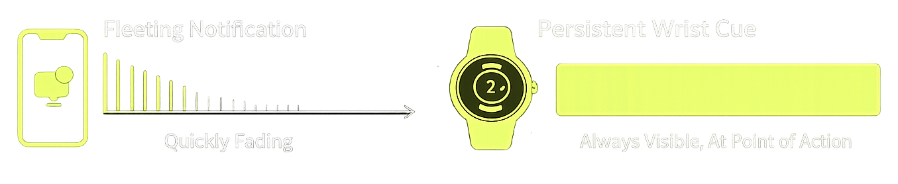
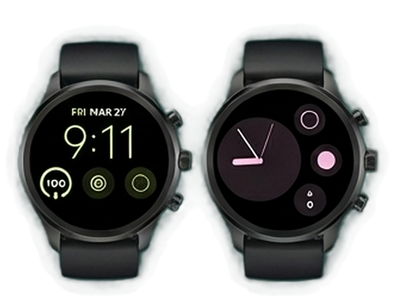

Visible
Easier to re-check than a fleeting thought.
Prospective memory is the ability to remember to perform an action at a future time. It is the bridge between intention and action.
In daily life, many of these tasks are small, repeated, and easy to lose: did I already take my medication, do I still need to send that message, did I lock the car, did I finish today's habit?
These tasks are vulnerable because they compete with whatever currently has your attention. If the cue is weak, delayed, or buried in a long notification list, the intention can disappear.

An external cue reduces the amount of memory work your brain has to do. Instead of rehearsing the intention internally, you offload it into the environment.
Easier to re-check than a fleeting thought.
Better than one-time alerts. Wrist cues offer a continuous signal.
Visible during the exact moment of decision.
By positioning reminders on your wrist, you create a persistent visual cue that is easily accessible during daily activities.

From cognitive support to high-stakes safety, see how a persistent wrist cue transforms intentions into actions.
Experience the scientific advantage of Toggle Reminder on your wrist.
View Toggle Reminder on Google Play